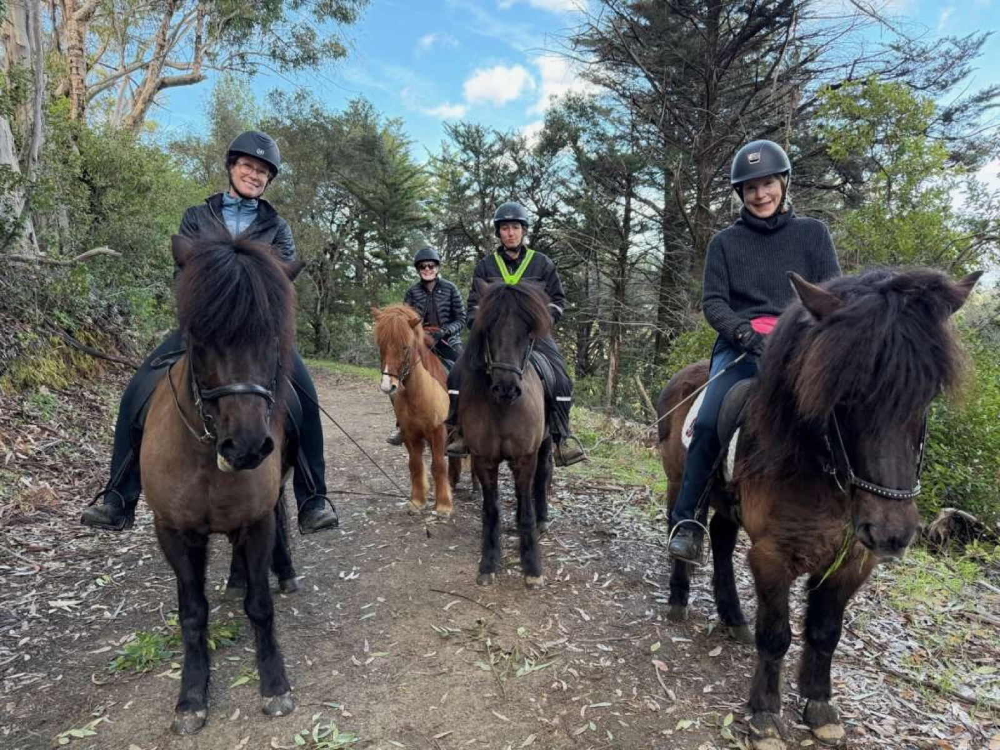
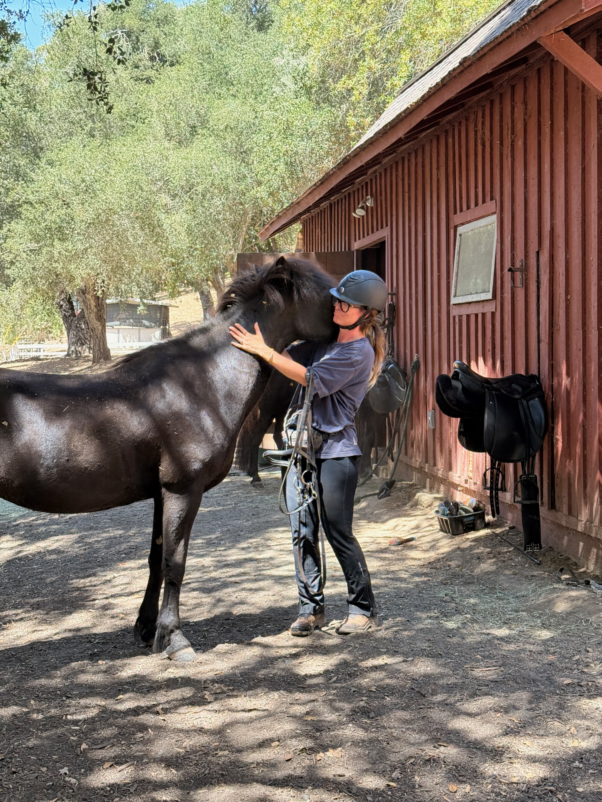
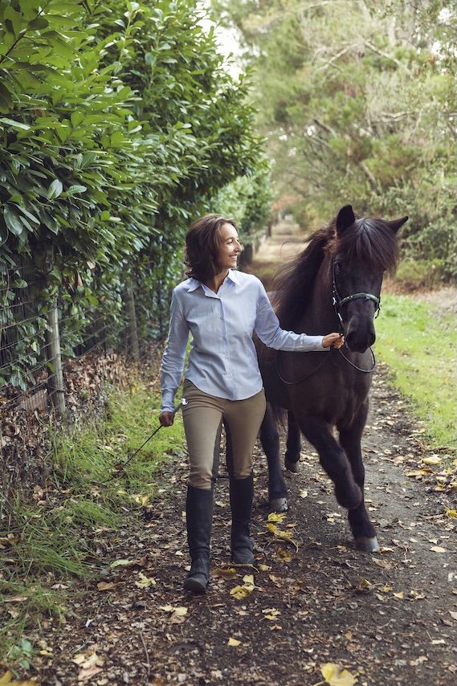
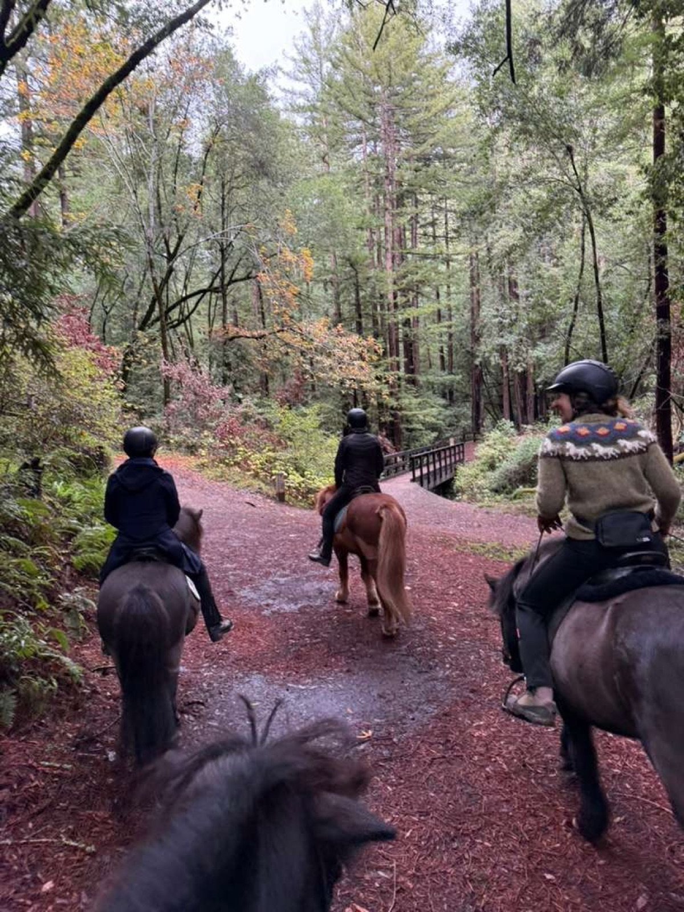
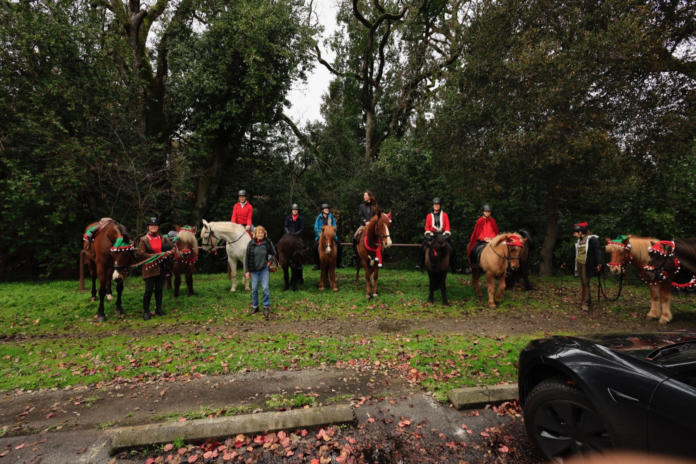

The Icelandic horse · 01
Five Unique Gaits
Most horse breeds have three gaits. Icelandics have five — including the smooth, gliding tölt and the breathtaking flying pace. Once you ride a tölt, nothing else compares.
San Francisco Bay Area
A community of owners, riders, breeders, and enthusiasts united by the most unique breed in the world — right here in the Bay Area.
Bay Area Icelandics was founded to bring together the Bay Area's Icelandic horse community — whether you've owned one for decades or you're just discovering the breed for the first time.
We organize group rides through the trails of Marin, the Peninsula, and the East Bay, host clinics with visiting trainers, and create a welcoming space for everyone who shares a love of these extraordinary horses.
Membership is free. All experience levels are welcome. The only requirement is a genuine appreciation for the world's most magical five-gaited horse.
The Breed
Descended from horses brought to Iceland by Norse settlers over a thousand years ago, Icelandic horses are unlike any other breed on earth.
Most horse breeds have three gaits. Icelandics have five — including the smooth, gliding tölt and the breathtaking flying pace. Once you ride a tölt, nothing else compares.

Shaped by a thousand years of natural selection in Iceland's harsh landscape, these horses are exceptionally healthy, easy keepers, and often ridden well into their 30s.

Icelandics are known for their bold personalities and deep affection for people. They are confident, curious, and form lasting bonds with their riders.

Iceland has strict laws preventing horses from leaving and returning. This means every Icelandic horse carries an unbroken lineage stretching back over a millennium — no crossbreeding, ever.

Sure-footed and brave, Icelandics are exceptional trail horses. Their compact size (13–14.2 hands) and surefootedness make them perfect for Bay Area terrain.

Icelandic horse enthusiasts form one of the most passionate and welcoming equestrian communities in the world — and now we have a home base right here in the Bay Area.
Renowned Icelandic horse trainer Sigvaldi Lárus Guðmundsson is coming to Woodside Pony Club on October 13. Register as a rider or auditor. Become a Bay Area Icelandics member to register — membership is free.
What We Do
From trail rides at sunrise to weekend clinics with visiting trainers, there's always something happening with Bay Area Icelandics.
Monthly rides through Bay Area parks and open spaces — Marin Headlands, Point Reyes, Briones, and more.
Hands-on clinics with visiting Icelandic horse trainers covering tölt, gait development, and horsemanship.
Stay connected with other members, share spontaneous rides, ask questions, and swap local barn recommendations.
New to the breed or looking for a riding partner? We help connect riders with horses and owners in the area.
Vetted local farriers, vets, trainers, and boarding facilities familiar with Icelandic horses.
Casual meetups for members and their families — because the horse world is better with good people.
From our past clinics
Looking back at clinics with the trainers who have shared their knowledge with our community.
Valkyrie Icelandic
Icelandic horsemanship and classical dressage.
Visit Laura’s website ↗Álfadans Equestrian Arts
Head trainer and instructor at Álfadans Equestrian Arts.
Visit Caeli’s website ↗Join Us
Sign up below to become a Bay Area Icelandics member. Membership is free and lets you register for the Sigvaldi clinic as a rider or auditor.
Questions? Connect on WhatsApp ↗No. Owners, riders, breeders, and enthusiasts are welcome. You can join at any experience level.
Start by becoming a club member using the membership form. You can register for the clinic as a rider or auditor. Connect with us on WhatsApp for help with the next steps.
Join our WhatsApp group for conversations, ride plans, and upcoming club events around the Bay Area.